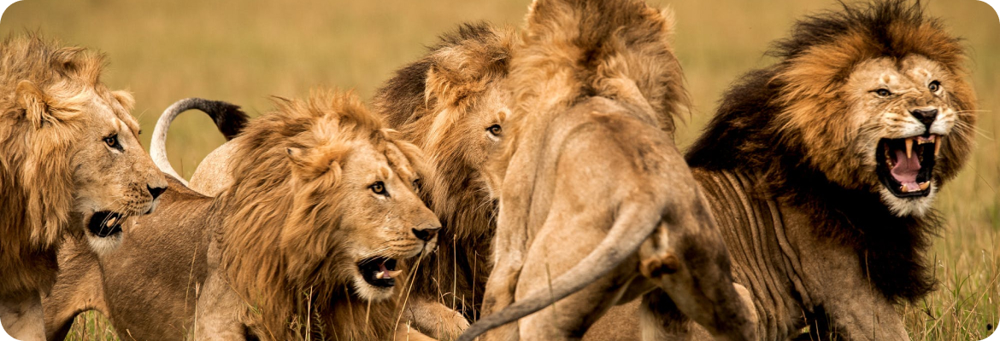

ХИЩНИКИ В WILDZOO
Африканский Лев
Могущественный, сильный, статный и бесстрашный – мы говорим о льве — царе зверей. Имея воинственный вид, силу, умение быстро бегать и всегда согласованные, продуманные действия, эти животные никогда никого не будут бояться. Животные, живущие рядом со львами, сами боятся их грозного взгляда, крепкого тела и мощнейшей челюсти. Недаром же льва прозвали царем зверей. Лев всегда был царем зверей, даже в древние времена это животное боготворили. Для древних египтян лев выступал в качестве сторожевого существа, охраняющего вход в мир иной. Для древних египтян бог плодородия Акер изображался с львиной гривой. В современном мире, на многих гербах государств изображен царь зверей. На гербах Армении, Бельгии, Великобритании, Гамбии, Сенегала, Финляндии, Грузии, Индии, Канады, Конго, Люксембурга, Малави, Марокко, Свазиленда и многих других изображен воинственный царь зверей. Африканского льва ввели в Красную книгу, как исчезающий вид. Голова и тело львов — плотные и мощные. Цвет кожи разный, в зависимости от подвида. Однако основным окрасом для царей зверей является окрас кремовый, охра, или желто-песочный. Азиатские львы все бело-серого цвета. Старые львы имеют жесткую шевелюру, покрывающую голову, плечи и опускающуюся до низа живота. Взрослые особи обладают черной, густой гривой или гривой темного, коричневого оттенка. А вот один из подвидов африканского льва, масайский, не имеет такую пышную гриву. На плечи шевелюра не опускается, и на лбу ее нет. У всех львов закругленные уши, посередине которых красуется желтое пятнышко. Пятнистый рисунок остается на коже молодых львов до тех пор, пока львицы не родят детенышей, а самцы не достигнут половой зрелости. Все представители львов имеют кисточку на кончике хвоста. Именно там заканчивается их позвоночный отдел.

Острорылый Крокодил
Это — крупное пресмыкающееся семейства настоящих крокодилов. Это самый распространенный вид крокодилов, обитающих в Южной и Северной Америке. В Соединенных Штатах острорылый крокодил встречается в южной части Флориды (а также в Пуэрто-Рико), однако в связи с потеплением климата границы ареала могут расшириться дальше на север. Распространение C. acutus является самым распространённым из четырёх существующих в новом свете настоящих крокодилов . Острорылые крокодилы населяют мангровые болота, устья рек, пресные и солёные озёра. Способность острорылого крокодила, подобно гребнистому крокодилу, находиться в соленой воде объясняет его широкое распространение по Карибским островам, южной Флориде, Большим Антильским островам, южной Мексике, Центральной Америке и южноамериканским странам Колумбии и Эквадора. Острорылые крокодилы особенно многочисленны в Коста-Рике . Одна из самых многочисленных популяций находится в озере Lago Enriquillo в Доминиканской Республике . Острорылые крокодилы, в отличие от американских аллигаторов, очень плохо переносят низкие температуры и живут исключительно в тропических водах, в то время как аллигатор способен выжить при температуре воды в 7,2 градуса по Цельсию.